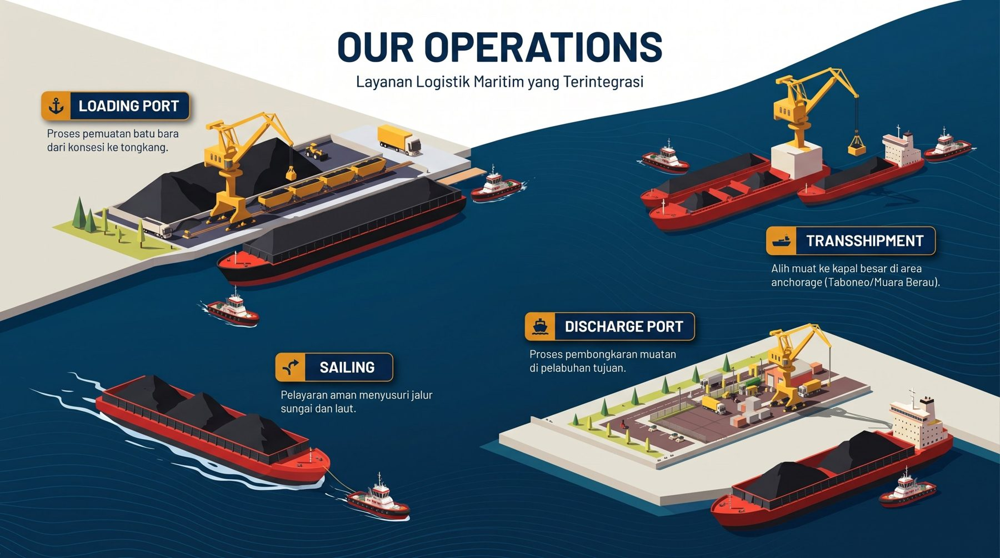
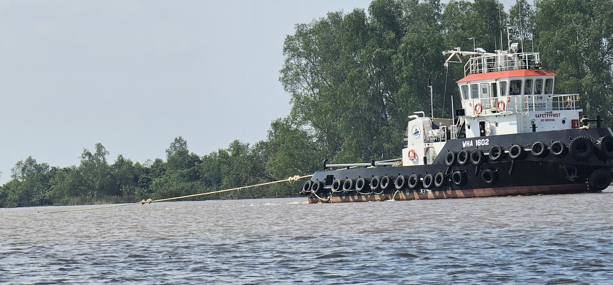
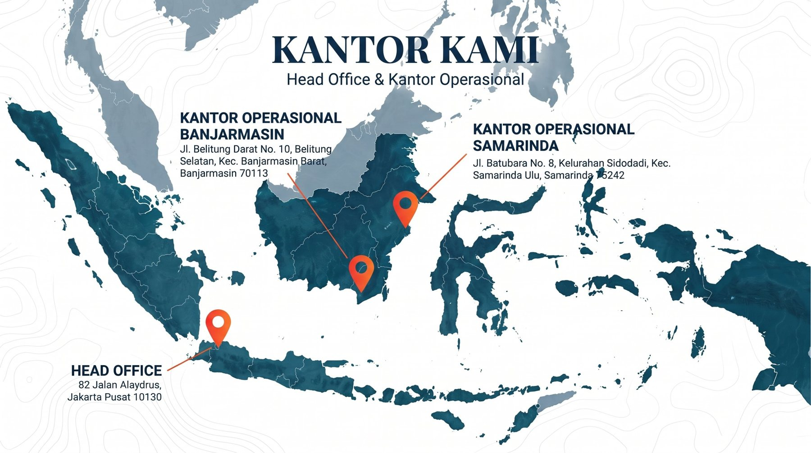
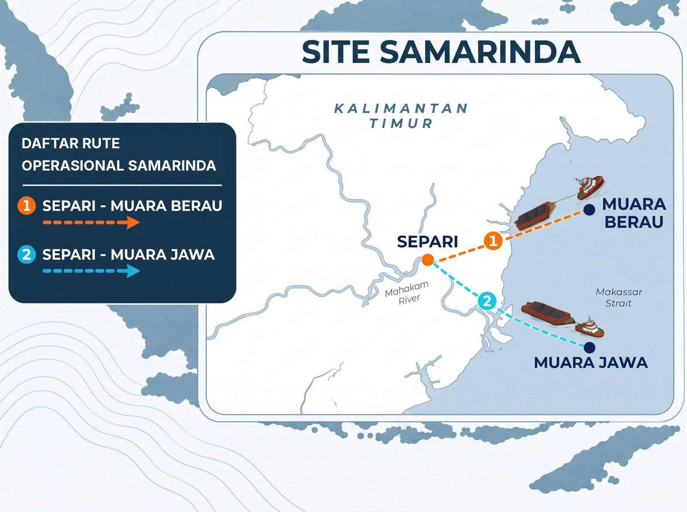
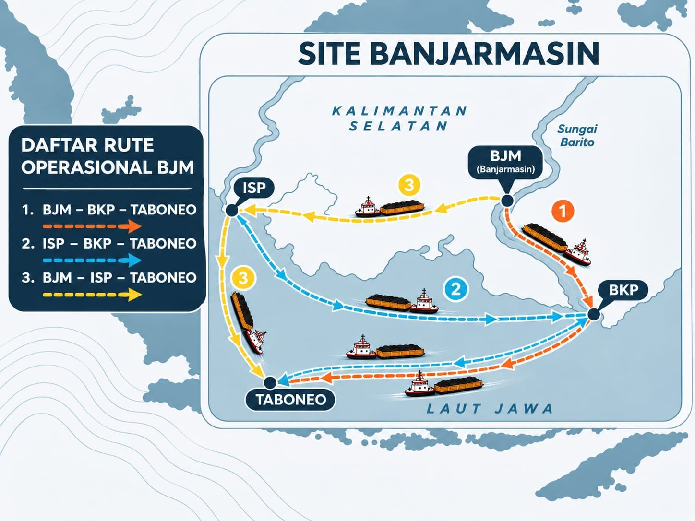

Layanan Logistik Laut
Dengan armada kapal tunda dan tongkang yang kami operasikan dan kelola, kami mengangkut muatan curah dari titik muat di sepanjang Sungai Barito dan Sungai Mahakam menuju titik transshipment maupun pelabuhan tujuan.
Sebagian besar lokasi tambang di Kalimantan tidak terhubung langsung dengan pelabuhan laut dalam yang dapat disandari kapal besar. Di situlah peran kami. Rangkaian tug & barge menjadi penghubung yang memindahkan komoditas dari dermaga sungai ke kapal induk di lepas pantai, sehingga muatan dalam jumlah besar dapat dikirim secara efisien dan ekonomis menuju pasar domestik maupun ekspor.
Wilayah pelayaran: perairan Kalimantan Selatan (Sungai Barito, Taboneo) dan Kalimantan Timur (Sungai Mahakam, Muara Berau, Muara Jawa).


Pengangkutan komoditas dari jetty tambang menuju dermaga atau kapal curah besar di titik transshipment, menggunakan rangkaian kapal tunda dan tongkang.
Minta PenawaranPengangkutan komoditas dari pelabuhan asal ke pelabuhan tujuan antar pulau di dalam negeri, dengan jadwal yang disepakati dalam kontrak.
Minta PenawaranPenyewaan set tug & barge secara time charter maupun voyage charter, lengkap dengan kru bersertifikat dan perawatan rutin.
Minta PenawaranPada masa puncak, kami menyediakan kapal dari pemilik mitra yang kami kelola dengan standar operasi yang sama.
Minta PenawaranWilayah Operasi
Kantor pusat di Jakarta menangani sisi komersial dan kontrak, sedangkan kegiatan muat dijalankan dari dua kantor site.



Kantor site dan pangkalan armada untuk kegiatan muat di jalur Sungai Barito, Kalimantan Selatan.
Jl. Belitung Darat No. 10, Belitung Selatan,
Kec. Banjarmasin Barat, Banjarmasin 70113
Kantor site untuk kegiatan muat di jalur Sungai Mahakam, Kalimantan Timur.
Jl. Batubara No. 8, Kelurahan Sidodadi,
Kec. Samarinda Ulu, Samarinda 75242
Armada Kami
Kapasitas muat dihitung dengan rumus (GT × 2,4) + 200 dan bersifat perkiraan. Kapasitas sebenarnya menyesuaikan jenis muatan, draft perairan, dan kondisi cuaca.
| Ukuran (L × B × D) | Unit | GT | Kapasitas muat (MT) | Klasifikasi |
|---|---|---|---|---|
| 300 × 80 × 18 ft | 55 | 3.113 – 3.145 | 7.671 – 7.748 | RINA |
| 270 × 80 × 16 ft | 10 | 2.404 | 5.970 | ClassNK |
| 270 × 70 × 16 ft | 5 | 2.102 – 2.148 | 5.245 – 5.355 | RINA |
| 280 × 75 × 17 ft | 2 | 2.505 – 2.512 | 6.212 – 6.229 | RINA |
| Jenis | Unit | Ukuran (L × B × D) | GT | Klasifikasi |
|---|---|---|---|---|
| Kelas 28 m | 44 | 28,05 × 8,6 × 4,3 m | 249 – 256 | RINA |
| Kelas 26 m | 10 | 26,00 × 8,00 × 3,65 m | 197 | ClassNK |
| Kelas 28 – 29,5 m | 7 | 28,05 – 29,5 × 8,6 – 9,0 × 4,16 – 4,3 m | 225 – 259 | RINA, BKI |
| Lainnya | 3 | Panjang 23,52 – 29,2 m | 175 – 241 | RINA, BKI |
GT (gross tonnage) adalah ukuran volume seluruh ruang tertutup kapal, dipakai untuk pendaftaran kapal, biaya pelabuhan, dan klasifikasi. Ketersediaan kapal dan rincian spesifikasi per unit tersedia atas permintaan.
Komoditas
Tongkang kami dirancang untuk muatan curah kering. Untuk muatan dengan penanganan khusus, sampaikan rinciannya lebih dulu agar kami cek kesesuaiannya.
Muatan utama yang kami angkut dari jalur sungai Barito dan Mahakam menuju titik transshipment.
Pasir, split, dan agregat untuk proyek infrastruktur antar pulau.
[Sebutkan jenis bijih yang biasa diangkut dan rutenya.]
[Sebutkan muatan curah lain, misalnya cangkang sawit atau klinker.]
Sertifikat & Dokumen
Setiap kapal dilengkapi sertifikat yang masih berlaku dan diperbarui sesuai masa berlakunya. Salinan sertifikat tertentu dapat kami sampaikan atas permintaan untuk keperluan uji tuntas.